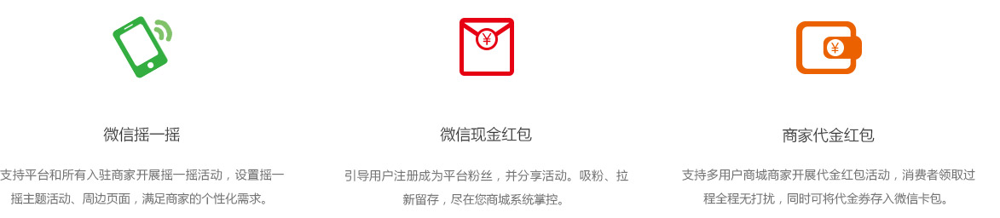

网兜多用户商城系统（B2B2C）专注中高端市场，以其优质的C2B视角功能设计、自营+招商全支持和线上线下完美融合等功能、超强的性能架构、完美的全生命周期服务赢得市场的青睐，并已积累了丰富的全行业经验，可为客户量身定制专属的生态级电子商务平台。

青海春天药用资源科技利用有限公司成立于2003 年，是青海省重点高科技及产业化龙头企业。
青海春天建设在青海冬虫夏草湿地公园的参观型生产厂，配备德国、美国、意大利、瑞士的生产及检测设备，建立严格监控的生产流程体系，实现产品制造工艺的先进性和产品质量的稳定性。